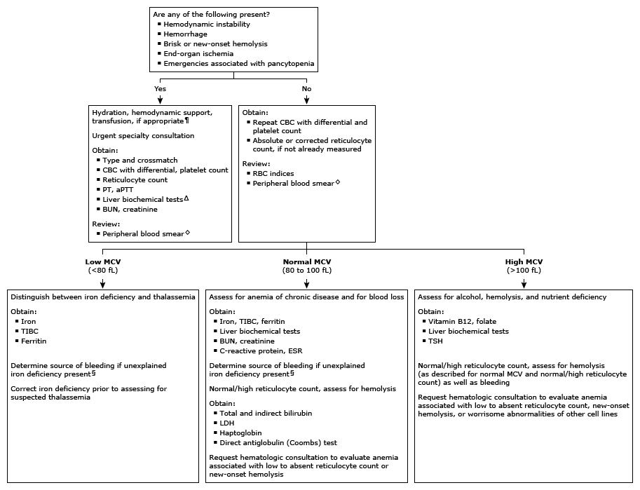

Initial evaluation of low hemoglobin, hematocrit in adults*

This algorithm is intended for use with additional UpToDate content on anemia.
CBC: complete blood count; PT: prothrombin time; aPTT: activated partial thromboplastin time; BUN: blood urea nitrogen; RBC: red blood cell; MCV: mean corpuscular volume; TIBC: total iron binding capacity; ESR: erythrocyte sedimentation rate; LDH: lactate dehydrogenase; TSH: thyroid-stimulating hormone. * Reference values for RBC parameters depend on age, sex, and other factors. Interpretation of a specific abnormal test result should be based upon the reference range reported by the laboratory. ¶ Life-saving interventions should not be delayed while awaiting the results of diagnostic testing. Δ Liver biochemical tests include total and indirect bilirubin, alanine aminotransferase, and aspartate aminotransferase. ◊ Review of the peripheral blood smear by an experienced individual may identify abnormalities not detected by automated machines but is not required in all patients. § Common sources are menstrual and occult gastrointestinal bleeding.